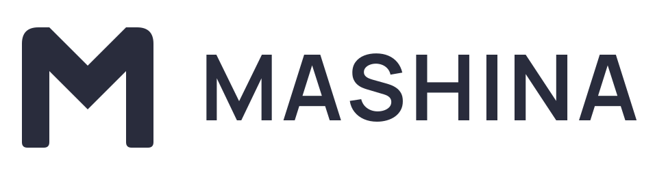

MASHINA Fold M
Вариант A, выбранный 26 октября 2026 года. Мягкие плечи и точный центральный сгиб сохраняют узнаваемую M в спокойной палитре Dusk.

На светлом фоне


Векторный знак
Один цельный контур без эффектов и зависимости от шрифта.
Иконка приложения
Графит и лаванда. Размеры для iOS и PWA.
Маленький размер
Отдельный масштаб для favicon 16, 32 и 48 px.
Палитра Dusk
Лаванда
#B9B5F4
Графит
#11141C
Светлая поверхность
#F1EEEB
Тёмный знак
#292C3C